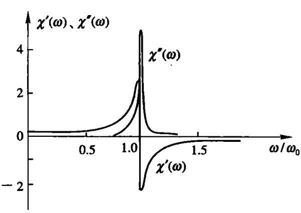

光与物质相互作用的经典理论认为：光在介质中传播时，介质对光的响应是电偶极振子在光电场作用下振动所产生的极化，其极化强度为：
$$\boldsymbol{P}(t) = -ne\boldsymbol{r}(t)$$一维振子的线性与非线性响应可以根据牛顿定律确定.
设介质为一个含有固有振动频率\(\omega_0\)的振子的集合.
振子模型是原子中电子运动的一种粗略模型，即认为介质的每一个原子的电子都受到一个弹性恢复力作用，使其保持在平衡位置上.
当原子受外加光电场作用时，原子中的电子作强迫振动，运动方程为：
$$\frac{\mathrm{d}^2 r}{\mathrm{d}t^2} + 2h\frac{\mathrm{d}r}{\mathrm{d}t} + \omega_0^2 r = -\frac{e}{m}E$$公式中的\(E\)和\(r\)，是\(E(t)\)和\(r(t)\).
将\(r\)与\(E\)进行Fourier展开：
$$r(t) = \int_{-\infty}^{+\infty}r(\omega)e^{-i\omega t}\mathrm{d}\omega$$ $$E(t) = \int_{-\infty}^{+\infty}E(\omega)e^{-i\omega t}\mathrm{d}\omega$$将求导符号放进积分中不是没有条件的，具体见莱布尼兹积分法则.
下面的式子，是将积分拆解成了每个\(\omega\)对应的等式，因为这个系统是线性的，所以可以这样拆.
时间域的线性方程经过Fourier变换后不会影响其线性.
由于运动方程为一个线性微分方程，因此其解\(r(t)\)只与光电场\(E(t)\)成线性关系，故对任一频率分量都可得到：
$$-\omega^2 r(\omega) - 2ih\omega r(\omega) + \omega_0^2r(\omega) = -\frac{e}{m}E(\omega)$$ $$\therefore r(\omega) = -\frac{e}{m}E(\omega)\frac{1}{\omega_0^2 - \omega^2 - 2ih\omega}$$[设]
$$\begin{align} F(\omega) &= \frac{1}{\omega_0^2 - \omega^2 - 2ih\omega}\\ &= \frac{\omega_0^2 - \omega^2}{(\omega_0^2 - \omega^2)^2 + 4h^2\omega^2} + i\frac{2h\omega}{(\omega_0^2 - \omega^2)^2 + 4h^2\omega^2} \end{align}$$ $$\therefore r(\omega) = -\frac{e}{m}E(\omega)F(\omega)$$根据介质极化强度的定义，单位体积内的电偶极矩复振幅\(P(\omega)\)为：
$$\begin{align} P(\omega) &= -ner(\omega)\\ &= \frac{ne^2}{m}E(\omega)F(\omega) \end{align}$$根据
$$\boldsymbol{P}^{(1)}(\omega) = \epsilon_0 \chi^{(1)}(\omega)\cdot\boldsymbol{E}(\omega)$$并考虑一维情况，可得：
可见，线性极化率\(\chi^{(1)}(\omega)\)的实部和虚部都是\(\omega\)的函数.
根据光的传输理论，线性极化率的实部描述光在介质中传输时相位延迟的频率色散特性；虚部描述介质对光传输的吸收（或放大特性）.
实部\(\chi'(\omega)\)与虚部\(\chi''(\omega)\)随频率变化的曲线如图所示：

\(\chi''(\omega)\)曲线在中心（共振）频率\(\omega_0\)处有一个峰值，具有Lorentz线型，其半功率点全宽度为\(2h\)，且\(h\)也是\(\chi'(\omega)\)曲线峰值处的频率与中心频率\(\omega_0\)之差.
若频率\(\omega\)远离共振频率\(\omega_0\)，即\(\omega-\omega_0\)大于几个线宽，则\(\chi''(\omega)\)可以忽略不计，则频率为\(\omega\)的光将在介质中无吸收地传输.
为描述非线性光学现象，必须考虑振子的非线性响应.
若振子恢复力中存在小的非简谐项，在考虑到三次项时，非简谐力为：
$$-m\omega_0^2r + mAr^2 + mBr^3$$简谐力，又叫线性回复力，是一种大小与位移成正比，方向总是指向平衡位置的力.
$$F = -kx$$上式中的第一项算简谐力，而整体不是简谐力.
此时，振子的运动方程为：
$$\frac{\mathrm{d}^2r}{\mathrm{d}t^2} + 2h\frac{\mathrm{d}r}{\mathrm{d}t} + \omega_0^2r - Ar^2 - Br^3 = -\frac{e}{m}E$$给定光电场\(E\)，即可解出\(r\)，再由\(P = -ner\)，就可求出非线性极化强度与非线性极化率.
1、非简谐力的来历
2、振子运动方程的来历
[设]频率为\(\omega\)的光电场表示式为：
$$E = E(\omega)e^{-i\omega t} + E^*(\omega)e^{i\omega t}$$由于振子的运动方程是非线性的，直接求解非常困难，考虑到振子恢复力中的非简谐项较小，可以根据微扰理论求解.
微扰理论也称为摄动理论，是量子力学中的内容.
将\(r\)展开为幂级数形式：
$$r = \sum_{k=1}^\infty r_k$$将其代入振子的运动方程，可以得到一系列\(r_k\)所满足的方程.
在每个方程中包含的项，对光电场来说具有相同的阶次.
这一系列方程中最低阶的三个方程是：
$$\frac{\mathrm{d}^2 r_1}{\mathrm{d}t^2} + 2h\frac{\mathrm{d}r_1}{\mathrm{d}t} + \omega_0^2r_1 = -\frac{e}{m}E$$ $$\frac{\mathrm{d}^2 r_2}{\mathrm{d}t^2} + 2h\frac{\mathrm{d}r_2}{\mathrm{d}t} + \omega_0^2r_2 = Ar_1^2$$ $$\frac{\mathrm{d}^2 r_3}{\mathrm{d}t^2} + 2h\frac{\mathrm{d}r_3}{\mathrm{d}t} + \omega_0^2r_3 = 2Ar_1r_2 + Br_1^3$$上述三个式子是展开后，分别只保留含\(E\)、\(E^2\)、\(E^3\)项的式子和.
第一个式子是关于\(r_1\)的线性微分方程，根据前面线性响应的讨论可以求出\(r_1\).
将\(r_1\)代入第二个式子，可以得到关于\(r_2\)的线性微分方程并求得\(r_2\).
同理，将\(r_1,r_2\)代入第三个式子，可以求得\(r_3\).
解得：
$$r_1(t) = -\frac{e}{m}E(\omega)F(\omega)e^{-i\omega t} + c.c.$$ $$\begin{align} r_2(t) = &\frac{e^2}{m^2}AE^2(\omega)F(2\omega)F(\omega)F(\omega)e^{-i2\omega t}\\ & + \frac{e^2}{m^2}AE(\omega)E^*(\omega)F(0)F(\omega)F(-\omega)\\ & + c.c. \end{align}$$ $$\begin{align} r_3(t) = &-\frac{e^3}{m^3}E^3(\omega)[2A^2F(2\omega) + B]F(3\omega)F^3(\omega)e^{-i3\omega t}\\ &-\frac{e^3}{m^3}E^2(\omega)E^*(\omega)[2A^2F(2\omega) + \frac{4A^2}{\omega_0^2} + 3B]F^3(\omega)F(-\omega)e^{-i\omega t}\\ & + c.c. \end{align}$$\(r(\omega)\)没有c.c.，但是\(r(t)\)有.
将极化强度写成级数形式：
$$P(t) = \sum_{k=1}^{\infty}P^{(k)}(t)$$则第\(r\)阶极化强度为：
$$P^{(k)}(t) = -ner_k(t)$$二阶极化强度为：
$$\begin{align} P^{(2)}(t) &= -ner_2(t)\\ &= -\frac{ne^3}{m^2}AE^2(\omega)F(2\omega)F(\omega)F(\omega)e^{-i2\omega t}\\ & -\frac{ne^3}{m^2}AE(\omega)E^*(\omega)F(0)F(\omega)F(-\omega)\\ & + c.c. \end{align}$$按照极化强度与光电场的关系，可将上式写成如下形式：
$$P^{(2)}(t) = \epsilon_0\chi^{(2)}(\omega, \omega)E^2(\omega)e^{-i2\omega t} + \epsilon_0\chi^{(2)}(\omega, -\omega)E(\omega)E(-\omega) + c.c.$$比较两种形式的\(P^{(2)}(t)\)，可得这两个二阶极化率分别为：
$$\chi^{(2)}(\omega, \omega) = -A\frac{ne^3}{\epsilon_0m^2}F(\omega + \omega)F(\omega)F(\omega)$$ $$\chi^{(2)}(\omega, -\omega) = -A\frac{ne^3}{\epsilon_0m^2}F(0)F(\omega)F(-\omega)$$同理：
$$\begin{align} P^{(3)}(t) &= -ner_3(t)\\ &= \frac{e^3}{m^3}E^3(\omega)[2A^2F(2\omega) + B]F(3\omega)F^3(\omega)e^{-i3\omega t}\\ & + \frac{e^3}{m^3}E^2(\omega)E^*(\omega)\left[2A^2F(2\omega) + \frac{4A^2}{\omega_0^2} + 3B\right]F^3(\omega)F(-\omega)e^{-i\omega t}\\ & + c.c.\\ &= \epsilon_0\chi^{(3)}(\omega, \omega, \omega)E^3(\omega)e^{-i3\omega t} + 3\epsilon_0\chi^{(3)}(\omega, \omega, -\omega)E^2(\omega)E^*(\omega)e^{-i\omega t} + c.c. \end{align}$$上式右边第二项中的因子\(3\)，时考虑到极化率的本征对易对称性后引入的.
式中三阶非线性极化率分别为：
$$\chi^{(3)}(\omega, \omega, \omega) = \frac{ne^4}{m^3}[2A^2F(2\omega) + B]F(3\omega)F^3(\omega)$$ $$\chi^{(3)}(\omega, \omega, -\omega) = \frac{ne^4}{3\epsilon_0m^3}\left[2A^2F(2\omega) + \frac{4A^2}{\omega_0^2} + 3B\right]F^3(\omega)F(-\omega)$$